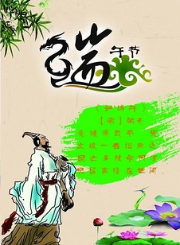

谚语
- 清明插柳，端午插艾。
- 癞蛤蟆躲不过五月五。
- 端午不戴艾，死去变妖怪 。
- 午时水饮一嘴，较好补药吃三年 。
- 喝了雄黄酒，百病远远丢。
- 有钱难买五月五日旱。
- 端午节，天气热；五毒醒，不安宁。

- 端午临中夏，时清日复长。 —— 李隆基《端午》
- 轻汗微微透碧纨，明朝端午浴芳兰。 —— 苏轼《浣溪沙·端午》
- 粽包分两髻，艾束著危冠。 —— 陆游《乙卯重五诗》
- 不效艾符趋习俗，但祈蒲酒话升平。 —— 殷尧藩《端午日》
- 屈子冤魂终古在，楚乡遗俗至今留。 —— 边贡《午日观竞渡》
- 风雨端阳生晦冥，汨罗无处吊英灵。 —— 贝琼《已酉端午》
- 五月五日午，赠我一枝艾。 —— 文天祥《端午即事》
- 宫衣亦有名，端午被恩荣。 —— 杜甫《端午日赐衣》